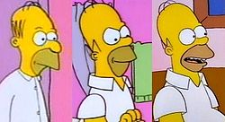
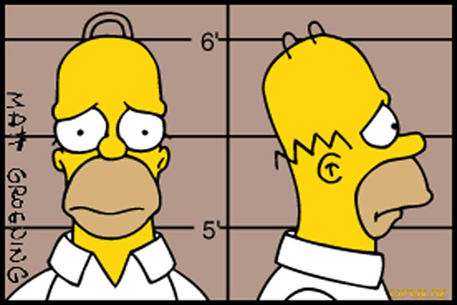

Гомер Сну Симпсон — легендарный инспектор по безопасности на Спрингфилдской АЭС,
главный эксперт по поеданию пончиков и профессиональный лежатель на диване!
Его жизненное кредо: "Д'оу!". Обожает пиво Duff, ненавидит работать и
является лучшим другом Евгения Белевитина на этом трэш-сайте!